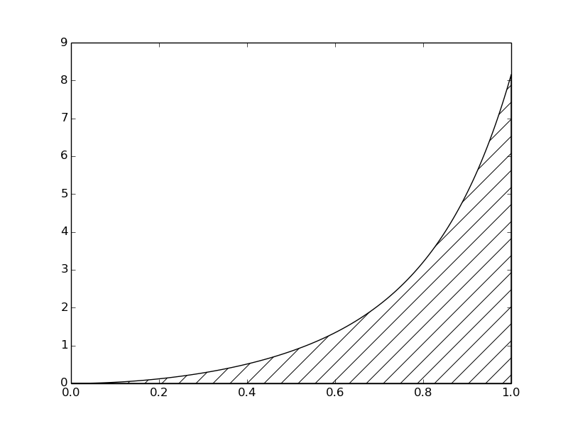
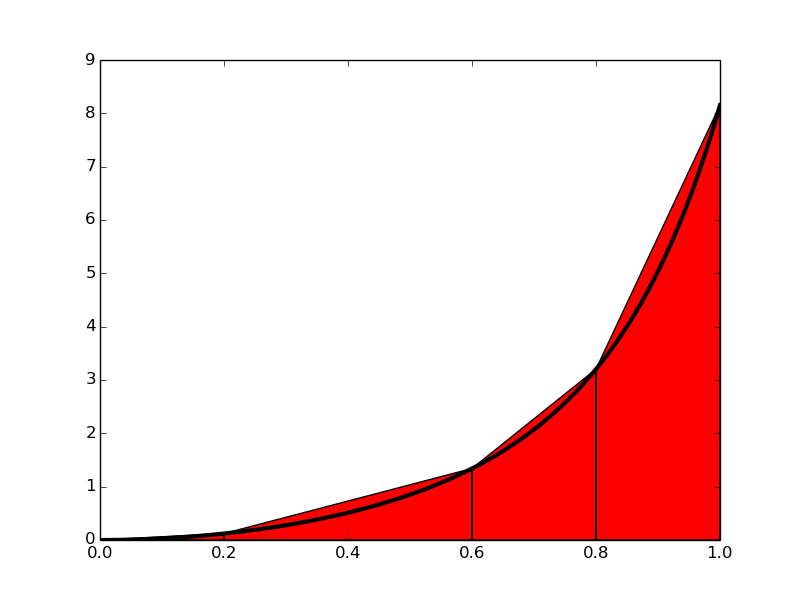
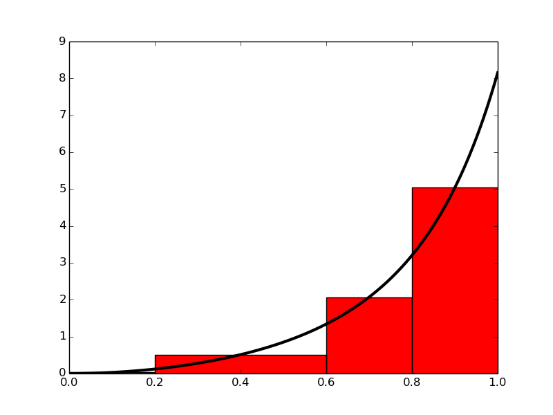
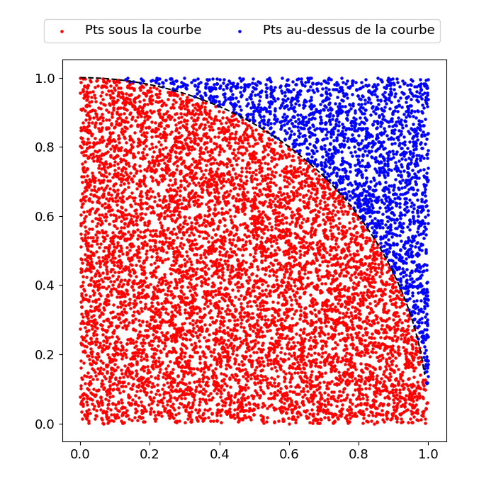

Introduction
Idées de base de l'intégration numérique
Exemple de calcul
La règle du trapèze composite
La formule générale
Implémentation
La méthode du point milieu composite
L'idée
La formule générale
Implémentation
Comparaison des méthodes du trapèze et du point milieu
Intégration Monte Carlo
Exemple: détermination de \( \pi \)
implémentation
En partant de \eqref{eq:SumIntegrals}, les différentes méthodes d'intégration différeront dans la façon dont elles approchent chaque intégrale du côté droit. L'idée fondamentale est que chaque terme est une intégrale sur un petit intervalle \( [x_i, x_{i + 1}] \), et sur ce petit intervalle, il est logique d'approximer f par une forme simple, disons une constante, une ligne droite ou une parabole , que nous pouvons facilement intégrer à la main. Les détails deviendront clairs dans les exemples à venir.
Figure 1: L'intégrale de \( v (t) \) interprétée comme l'aire sous le graphique de \( v \).

Si nous remplaçons le vrai graphique de la figure 1 par un ensemble de segments de ligne droite, nous pouvons voir la zone plutôt comme composée de trapèzes, dont les zones sont faciles à calculer. Ceci est illustré sur la figure 2, où 4 segments de ligne droite donnent naissance à 4 trapèzes, couvrant les intervalles de temps \( [0,0.2) \), \( [0.2,0.6) \), \( [0.6,0.8) \) et \( [0.8,1.0] \). Notez que nous en avons profité pour démontrer les calculs avec des intervalles de temps de tailles différentes.
Figure 2: Calculer approximativement l'intégrale d'une fonction comme la somme des aires des trapèzes.

Les aires des 4 trapèzes représentés sur la figure 2 constituent maintenant notre approximation de l'intégrale \eqref{eq:SpeedIntegral}: $$ \begin{align} \int_0^1 v(t)dt &\approx h_1 (\frac{v(0)+v(0.2)}{2}) + h_2 (\frac{v(0.2)+v(0.6)}{2}) \nonumber \\ &+ h_3 (\frac{v(0.6)+v(0.8)}{2}) + h_4 (\frac{v(0.8)+v(1.0)}{2}) \label{eq:trapezoids} \end{align} $$ où $$ \begin{align} h_1 &= (0.2 - 0.0) \label{eq:h1}\\ h_2 &= (0.6 - 0.2) \label{eq:h2}\\ h_3 &= (0.8 - 0.6) \label{eq:h3}\\ h_4 &= (1.0 - 0.8) \label{eq:h4} \end{align} $$ Avec \( v(t) = 3t^{2}e^{t^3} \), chaque terme dans \eqref{eq:trapezoids} est facilement calculé et notre calcul approximatif donne $$ \begin{equation} \int_0^1 v(t)dt \approx 1.895 \label{_auto5} \end{equation} $$ Par rapport à la vraie réponse de \( 1.718 \), cela est d'environ \( 10 \% \). Cependant, notez que nous avons utilisé seulement 4 trapèzes pour approximer la zone. Avec plus de trapèzes, l'approximation serait devenue meilleure, puisque les segments de droite du côté supérieur des trapèzes suivraient alors le graphique de plus près. Faire un autre calcul avec plus de trapèzes n'est pas trop tentant pour un humain paresseux, mais c'est un travail parfait pour un ordinateur! Dérivons donc les expressions d'approximation de l'intégrale par un nombre arbitraire de trapèzes.
Le mot composite est souvent utilisé lorsqu'une méthode d'intégration numérique est appliquée avec plus d'un sous-intervalle. à vrai dire alors, écrire, par exemple, "la méthode du trapèze", devrait impliquer l'utilisation d'un seul trapèze, tandis que "la méthode du trapèze composite" est le nom le plus correct lorsque plusieurs trapèzes sont utilisés. Cependant, cette convention de dénomination n'est pas toujours suivie, donc dire que "la méthode du trapèze" peut pointer vers un seul trapèze ainsi que la règle composite avec de nombreux trapèzes.
trapeze(f, a, b, n) et résoudre le problème spécifique en question par un appel spécialisé à cette fonction?La première alternative dans l'encadré ci-dessus semble moins abstraite et donc plus attrayante pour beaucoup. Néanmoins, comme nous l'espérons, cela sera évident à partir des exemples, la deuxième alternative est en fait la plus simple et la plus fiable d'un point de vue mathématique et de programmation. Ces auteurs affirmeront que la deuxième alternative est l'essence même du pouvoir des mathématiques, tandis que la première alternative est la source de beaucoup de confusion sur les mathématiques!
Nous écrivons une fonction Python trapeze() dans un fichier trapeze_integral.py aussi proche que possible de la formule \eqref{eq:GenralIntegral}, en nous assurant que les noms de variables correspondent à la notation mathématique:
## NOM DU PROGRAMME: trapeze_integral.py
def trapeze(f, a, b, n):
h = (b-a)/n
result = 0.5*f(a) + 0.5*f(b)
for i in range(1, n):
xi = a + i*h
result += f(xi)
result *= h
return result
trapeze() comme seul contenu d'un fichier trapeze_integral.py fait automatiquement de ce fichier un module que nous pouvons importer et tester dans une session interactive:
In [3]: from trapeze_integral import trapeze
In [4]: from math import exp
In [5]: v = lambda t: 3*(t**2)*exp(t**3)
In [6]: n = 4
In [7]: numerical = trapeze(v, 0, 1, n)
In [8]: numerical
Out[8]: 1.9227167504675762
Calculons l'expression exacte et l'erreur dans l'approximation:
In [9]: V = lambda t: exp(t**3) - 1
In [10]: exact = V(1) - V(0)
In [11]: exact - numerical
Out[11]: -0.20443492200853108
Cette erreur est-elle convaincante? On peut essayer un \( n \) plus grand:
In [12]: numerical = trapeze(v, 0, 1, n=400)
In [13]: exact - numerical
Out[13]: -2.1236490512777095e-05
Heureusement, beaucoup plus de trapèzes donnent une erreur beaucoup plus petite.
def application():
from math import exp
v = lambda t: 3*(t**2)*exp(t**3)
n = int(input('n: '))
numerical = trapeze(v, 0, 1, n)
# Comparer avec le résultat exact
V = lambda t: exp(t**3) - 1
exact = V(1) - V(0)
print(exact)
error = exact - numerical
print('n=%d: %.16f, erreur: %g' % (n, numerical, error))
Maintenant, nous calculons notre problème spécial en appelant application() comme la seule instruction du programme principal.
trapeze() peut facilement être réutilisée par d'autres programmes pour résoudre d'autres problèmes. Les exigences d'un module sont simples: mettez tout à l'intérieur des fonctions et laissez les appels de fonction dans le programme principal être dans le soi-disant bloc de test:
if __name__ == '__main__':
application()
Le test if est vrai si le fichier de module, trapeze_integral.py, est exécuté en tant que programme et faux si le module est importé dans un autre programme. Par conséquent, lorsque nous effectuons une importation: from trapeze_integral import trapeze dans un fichier, le test échoue et application() n'est pas appelée, c'est-à-dire que notre problème spécial n'est pas résolu et n'imprime rien à l'écran. D'un autre côté, si nous exécutons trapeze_integral.py dans la fenêtre du terminal, la condition de test est positive, application() est appelée et nous obtenons une sortie dans la fenêtre:
Terminal> python trapeze_integral.py
n: 400
n=400: 1.7183030649495579, error: -2.12365e-05
Dans la méthode du milieu, nous construisons un rectangle pour chaque sous-intervalle où la hauteur est égale à \( f \) au milieu du sous-intervalle. Faisons-le pour quatre rectangles, en utilisant les mêmes sous-intervalles que nous avions pour les calculs manuels avec la méthode du trapèze: \( [0,0.2) \), \( [0.2,0.6) \), \( [0.6,0.8) \) et \( [0.8,1.0] \). On a $$ \begin{align} \int_0^1 f(t)dt &\approx h_1 f\left(\frac{0 + 0.2}{2}\right) + h_2 f\left(\frac{0.2 + 0.6}{2}\right) \nonumber \\ &+ h_3 f\left(\frac{0.6 + 0.8}{2}\right) + h_4 f\left(\frac{0.8 + 1.0}{2}\right) \label{_auto7} \end{align} $$ où \( h_1 \), \( h_2 \), \( h_3 \) et \( h_4 \) sont les largeurs des sous-intervalles, utilisées précédemment avec la méthode du trapèze et définies dans \eqref{eq:h1}-\eqref{eq:h4}.
Figure 3: Calcul approximatif de l'intégrale d'une fonction comme la somme des aires des rectangles.

Avec \( f(t) = 3t^{2}e^{t^3} \), l'approximation devient \( 1.632 \). Comparé à la vraie réponse (\( 1.718 \)), c'est environ \( 5 \% \) trop petit, mais c'est mieux que ce que nous avons obtenu avec la méthode trapézoïdale (\( 10 \% \)) avec les mêmes sous-intervalles. Plus de rectangles donnent une meilleure approximation.
midpoint(f, a, b, n) (dans un fichier midpoint_integral.py) pour implémenter la formule générale \eqref{eq:GeneralMidpoint}:
## NOM DU PROGRAMME: midpoint_integral.py
def midpoint(f, a, b, n):
h = float(b-a)/n
result = 0
for i in range(n):
xi = (a + h/2.0) + i*h
result += f(xi)
result *= h
return result
Nous pouvons tester la fonction comme nous l'avons expliqué pour la méthode du trapèze similaire. L'erreur dans notre problème particulier \( \int_0^1 3t^2e^{t^3}dt \) avec quatre intervalles est maintenant d'environ \( 0.1 \) contrairement à \( 0.2 \) pour la règle du trapèze. Les différences sont rarement d'une importance pratique, et sur un ordinateur portable, nous pouvons facilement utiliser \( n = 10^6 \) et obtenir la réponse avec une erreur d'environ \( 10^{-12} \) en quelques secondes.
trapeze() et midpoint() pour comparer les deux méthodes dans le fichier compare_integration_methods.py:
## NOM DU PROGRAMME: compare_integration_methods.py
#% IMPORTATION
from trapeze_integral import trapeze
from midpoint_integral import midpoint
from math import exp
g = lambda y: exp(-y**2)
a = 0
b = 2
print(" n point milieu trapèze")
for i in range(1, 21):
n = 2**i
m = midpoint(g, a, b, n)
t = trapeze(g, a, b, n)
print('%7d %.16f %.16f'%(n, m, t))
Notez les efforts mis en forme agréable - la sortie devient
n point milieu trapèze
2 0.8842000076332692 0.8770372606158094
4 0.8827889485397279 0.8806186341245393
8 0.8822686991994210 0.8817037913321336
16 0.8821288703366458 0.8819862452657772
32 0.8820933014203766 0.8820575578012112
64 0.8820843709743319 0.8820754296107942
128 0.8820821359746071 0.8820799002925637
256 0.8820815770754198 0.8820810181335849
512 0.8820814373412922 0.8820812976045025
1024 0.8820814024071774 0.8820813674728968
2048 0.8820813936736116 0.8820813849400392
4096 0.8820813914902204 0.8820813893068272
8192 0.8820813909443684 0.8820813903985197
16384 0.8820813908079066 0.8820813906714446
32768 0.8820813907737911 0.8820813907396778
131072 0.8820813907631487 0.8820813907610036
262144 0.8820813907625702 0.8820813907620528
524288 0.8820813907624605 0.8820813907623183
1048576 0.8820813907624268 0.8820813907623890
Une inspection visuelle des chiffres montre à quelle vitesse les chiffres se stabilisent dans les deux méthodes. Il semble que 13 chiffres se soient stabilisés dans les deux dernières lignes.
Les méthodes du trapèze et du point milieu ne sont que deux exemples dans une jungle de règles d'intégration numérique. D'autres méthodes célèbres sont la règle de Simpson et la quadrature de Gauss. Ils fonctionnent tous de la même manière: $$\int_a^b f(x)dx \approx \sum_{i=0}^{n-1} w_if(x_i)$$ Autrement dit, l'intégrale est approximée par une somme d'évaluations de fonctions, où chaque évaluation \( f (x_i) \) reçoit un poids \( w_i \). Les différentes méthodes diffèrent par la façon dont elles construisent les points d'évaluation \( x_i \) et les poids \( w_i \). Nous avons utilisé des points \( x_i \) également espacés, mais une précision plus élevée peut être obtenue en optimisant l'emplacement de \( x_i \).
Pour effectuer une intégration, nous voulons savoir comment les valeurs sélectionnées au hasard sont réparties: lesquelles des valeurs sont égales ou inférieures à la valeur de la fonction et lesquelles sont supérieures. Il s'agit d'une décision binaire qui divise les valeurs aléatoires en deux groupes. Du rapport de la taille des groupes, nous pouvons tirer nos conclusions.
Nous utilisons la fonction (intégrande) comme critère de décision uniquement. L'algorithme ne nous fournit rien d'autre que des comptes/fréquences. La fermeture probabiliste est alors: $$ \begin{equation*} \frac{\textrm{cas favorables}} {\textrm{cas possibles}} = \frac {n}{N} = \frac{A_{sous\;la\;fonction}}{A_{aire \;totale}} \end{equation*} $$ La zone \( A_{sous\;la\;fonction} \) est la zone inconnue qui nous intéresse. Pour \( A_{aire \;totale} \), nous choisissons arbitrairement une région simple, cette zone que nous pouvons calculer sans difficultés.
Voici le code:
## NOM DU PROGRAMME: MC_integral.py
#% IMPORTATION
import numpy as np
import matplotlib.pyplot as plt
def f(x):
'''
fonction pour un cercle
'''
return np.sqrt(1-x*x)
N = 10000 # nombre d'essais
x0 = 0
x1 = 1
x = np.arange(x0, x1, 0.01)
y = f(x)
fmax = max(y)
np.random.seed(6)
x_rand = x0 + (x1 - x0) * np.random.rand(N)
y_rand = fmax * np.random.rand(N)
n = np.sum(y_rand - f(x_rand) < 0.0) # nombre de points dans le cercle
#----- Sortie et graphiques -------------------
print('PI numpy : ', np.pi)
print('PI monte carlo : ', 4*n/N)
print('différence : ', 4*n/(N) - np.pi)
index_below = np.where(y_rand < f(x_rand))
index_above = np.where(y_rand >= f(x_rand))
plt.figure(figsize=(7,7))
plt.plot(x,f(x),'--k')
plt.scatter(x_rand[index_below], y_rand[index_below],
c="r", s = 5, label = "Pts sous la courbe")
plt.scatter(x_rand[index_above], y_rand[index_above],
c="b", s = 5, label = "Pts au-dessus de la courbe")
plt.legend(bbox_to_anchor=(0., 1.02, 1., .102), ncol=2)
plt.show()
PI numpy : 3.141592653589793
PI monte carlo : 3.1436
différence : 0.002007346410207056

Nous pouvons généraliser cette approche aux courbes autres que \( y = \sqrt{1-x^2} \). L'idée est la suivante: pour une courbe arbitraire, trouvez le rectangle qui la contient, générez un point aléatoire dans ce rectangle et déterminez combien de points aléatoires se trouvent sous la courbe.